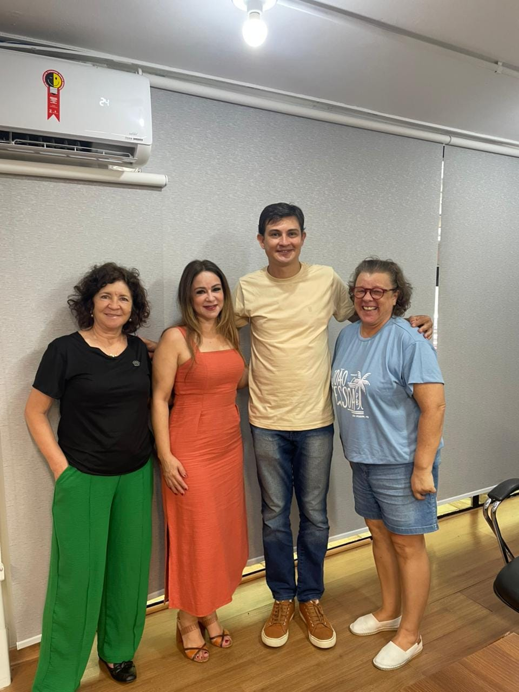

Atualizações
Últimas Notícias da Causa Animal
 Investimento
Investimento
Wellington Bozo destina R$ 100 mil para causa animal
Vereador direciona emenda parlamentar de R$ 100 mil para a causa animal em Presidente Prudente, fortalecendo também saúde e área social. Os recursos serão utilizados para castração, vacinação e cuidados veterinários para animais em situação de abandono.
Ler matéria completa Lei Aprovada
Lei Aprovada
Câmara aprova recompensa por denúncia de maus-tratos
PL nº 399/2026 estabelece recompensa financeira para moradores que denunciarem maus-tratos contra animais, com sigilo garantido.
Ler no G1
ReuniãoReunião com protetoras e ONG Astae
Wellington Bozo se reuniu com protetoras independentes e representantes da ONG Astae para discutir melhorias e novos projetos voltados à causa animal.
Ler mais Lei
Lei
Lei de Conscientização e Proteção Animal sancionada
Lei nº 11.644/2025 institui Programa Educacional de Conscientização e Proteção Animal nas escolas de Presidente Prudente.
Ler mais